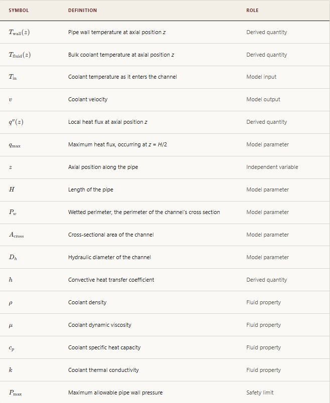

A "successful attack" against a surrogate model is conventionally defined by a spike in prediction error, a purely statistical measure with no bearing on physical consequence. This goal reclassifies that failure in terms of real-world impact, requiring an attack to be a stealthy, plausible perturbation that pushes the system's true or predicted state past a safety-relevant limit.
A valid attack must satisfy two constraints that keep the perturbation stealthy, plus a third that determines whether it actually causes damage.
1. Sparsity. Of the model's 102 input features, only a small number, n, may be perturbed. The fraction perturbed must stay below a chosen sparsity threshold τ:
2. Plausibility. Each perturbed input $\tilde{b}_i$ must remain within one standard deviation of that input's average value in the training set. Standardizing against the training-set mean $\mu_i$ and standard deviation $\sigma_i$:
3. Damage. Let y denote the true value of a monitored quantity (pressure or wall temperature), $\hat{y}$ the surrogate model's predicted value for that quantity, and L the corresponding safety limit, defined next in the Damage Criteria below. An attack causes damage if it produces either of the following:
unsafemissed is a true failure that the surrogate model fails to flag; unsafefalse-alarm is a false failure the model reports when the true state is safe. Both cases apply independently to pressure and to wall temperature, using the corresponding limit L below.
The safety limit L referenced in the damage condition above takes one of the following two forms, depending on which quantity is being monitored:
Barlow's formula for the maximum allowable pipe-wall pressure, where S is the material's allowable stress, t the wall thickness, and D the outer diameter.
Maximum service temperature of 316H stainless steel, at any axial position z.
The allowable stress S is temperature-dependent: it is read from the 1-hour creep-rupture lookup tables in an Idaho National Laboratory study, at whatever wall temperature is being evaluated. We always use the 1-hour value specifically because it is conservative, the shortest and most restrictive duration in the table, and an unsafe condition such as a false alarm will not remain undetected for anywhere near that long. With a wall thickness t = 0.007112 m and outer diameter D = 1/6 m, this formula yields a pressure limit of approximately 9.39 MPa.
The wall temperature at axial position z follows from Newton's law of cooling, relating it to the local fluid temperature and the local heat flux through the convective coefficient h:
The heat flux itself follows the cosine-shaped axial power profile used in Roy et al. (2026):
The convective coefficient h is not constant, as it depends on the flow regime and the coolant's thermal properties. It is computed using the Dittus–Boelter correlation, the standard closure for turbulent forced convection in a pipe:
The first bracketed term is the Reynolds number, the ratio of inertial to viscous forces, raised to the 0.8 power. The second is the Prandtl number, the ratio of momentum to thermal diffusivity, raised to the 0.4 power. Together, these form the Nusselt correlation, $\text{Nu} = 0.023\,\text{Re}^{0.8}\,\text{Pr}^{0.4}$, which is converted to a dimensional coefficient via $k/D_h$.
Having established q″ and h, Tfluid(z) follows from a conservation-of-energy balance on the coolant: as the fluid moves along the channel, it absorbs heat through the wetted perimeter Pw. Integrating this heat gain from the inlet to position z, and substituting into Newton's law of cooling above, yields the full wall-temperature profile:
This integral evaluates in closed form to $\dfrac{H}{\pi}\left[1-\cos\!\left(\dfrac{\pi z}{H}\right)\right]$. Substituting this result, and retaining h in its fully expanded form, yields the final closed-form profile:
The first term represents the bulk fluid temperature rise from absorbed heat, which grows monotonically with z. The second represents the additional temperature rise across the wall's boundary layer, which tracks the shape of the local heat flux.

An adversarial input that merely inflates a surrogate model's mean-squared error is a benchmark curiosity. An adversarial input that, once mapped through the pressure limit and this wall-temperature model, pushes P above Pmax or Twall(z) above 800°C for any z is a safety-relevant finding: it identifies a region of the input space where trusting the surrogate model would mean missing a real physical failure mode.